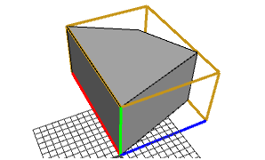
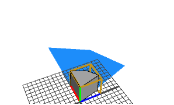
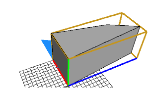

s operation
s(xSize, ySize, zSize)
xSize, ySize, zSize float Sizes of the new scope dimensions.
The s operation resizes the current shape (it sets the size vector scope.s).
The relative operator ' permits a convenient notation relative to the current shape's scope size. s('sx,0,0) is equivalent to s(sx*scope.sx, 0, 0).
Negative sizes result in mirroring along the corresponding axes; this means the normals are inverted.
Related
Examples
Basic Usage

Lot--> extrude(10)
The initial shape with its scope highlighted.

Lot--> extrude(10) s(5,5,5)
Here, all scope sizes are set to the absolute value 5.

Lot-->
extrude(10)
s('0.5,'1,'1.5)
This example demonstrates the usage of the relative operator '. The s operation above is equivalent to
s(0.5*scope.sx, scope.sy, 1.5*scope.sz)